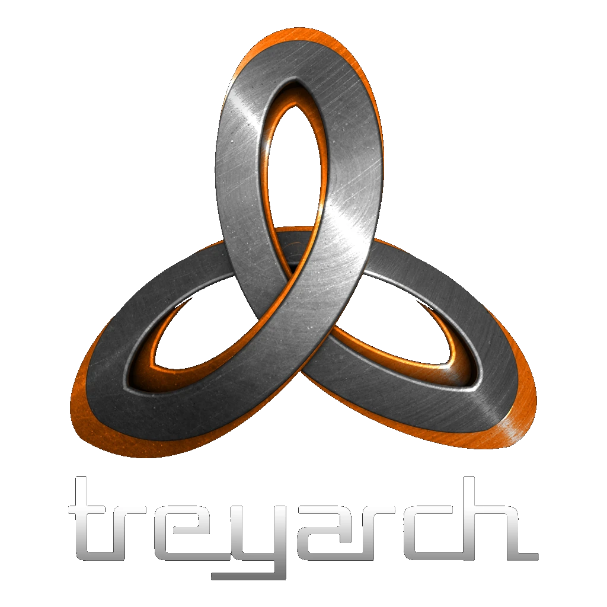
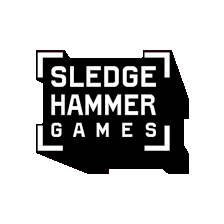

ELS PRINCIPALS ESTUDIS DE DESENVOLUPAMENT
Infinity Ward

Infinity Ward va crear la franquícia Call of Duty l'any 2003 i és conegut per redefinir el gènere FPS amb títols clau com Call of Duty 4: Modern Warfare (2007). Els seus jocs es caracteritzen per una narrativa cinematogràfica i un enfocament realista del combat. Continua sent un pilar de la saga, desenvolupant lliuraments influents com la sub-saga Modern Warfare.
Treyarch
Treyarch va adquirir molta notorietat amb la introducció del popular mode Zombies a Call of Duty: World at War. Són els creadors de la reeixida sub-saga Black Ops, destacada per la seva narrativa intensa i complexa, així com per un multijugador molt equilibrat. El seu estil més fosc i experimental els ha consolidat com un dels principals pilars de la franquícia.
Sledgehammer Games
Sledgehammer Games va debutar amb la col·laboració a Call of Duty: Modern Warfare 3 i es va consolidar amb títols com Advanced Warfare, que va introduir mecàniques futuristes (exoesquelets). L'estudi destaca per la seva capacitat d'experimentar i reinventar la saga, sent també els responsables del retorn als orígens històrics amb Call of Duty: WWII.